Design 78 · Peach Hour · asset kit
Design 78 · Peach Hour · asset kit

Albretsen AS
Quiet software that pays for itself.
Apps, SaaS and agent infrastructure, built in Norway since 2016.
Direction
A whole small world, held in the hand.
A hill village built from primitives in three.js: stone walls, canal-tile roofs, shutters, olive terraces, a pool. It sits on a travertine turntable in warm haze, graded like false-colour infrared film, so the olives glow rose and the shadows turn mauve. Each product is one building. Drag to turn it; drag the sun to move the day.
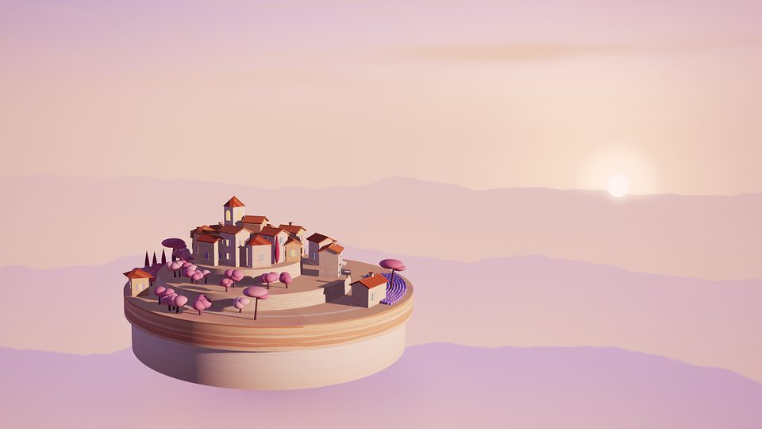
img/hero-dusk-*.avif|webp|jpg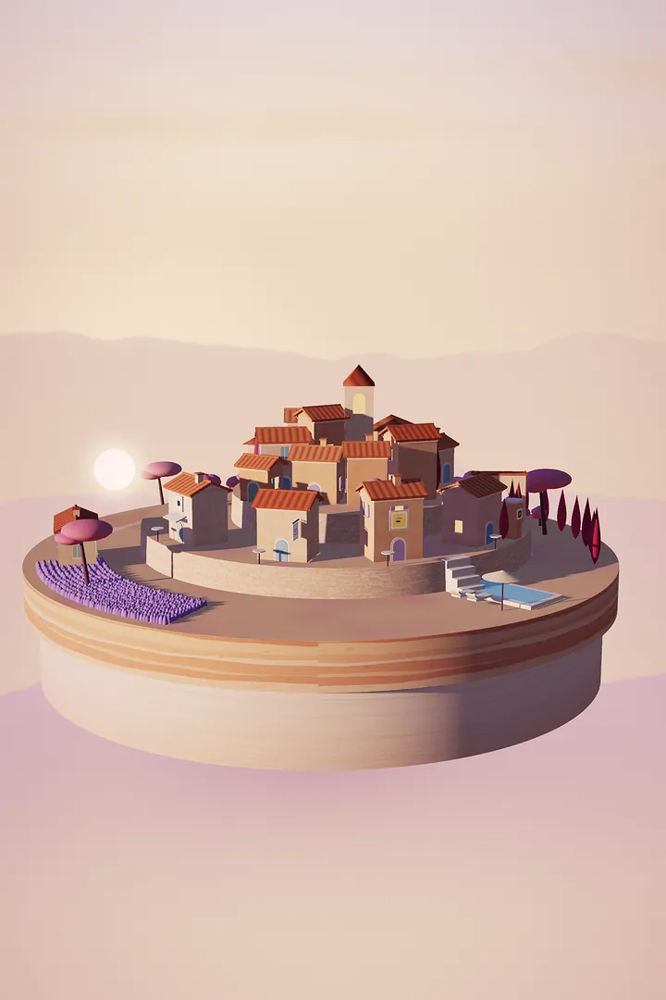
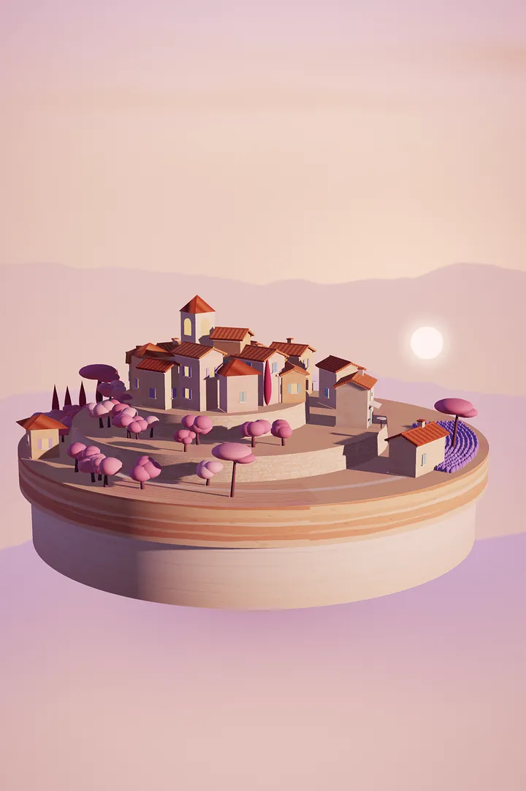
img/hero-*-portrait-*Interactive asset · diorama.js
Turn it. Drag the sun.
The live scene loads after first paint, over the baked still, then fades in. Drag the model to turn the turntable; drag the sun disc (or the slider) from sunrise to dusk. Lit windows come on as the light falls. Full-screen demo: diorama.html.
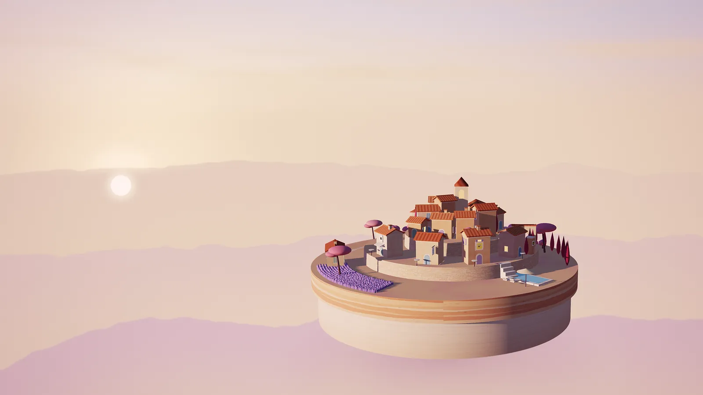
Motion 1 · Haze Drift
Three layers, three depths.
The dawn hero baked as separate layers (sky, ridges with alpha, the model with alpha). Scroll this block: the sky barely moves, the ridges drift, the model floats forward. CSS scroll-driven animation with a JS fallback.
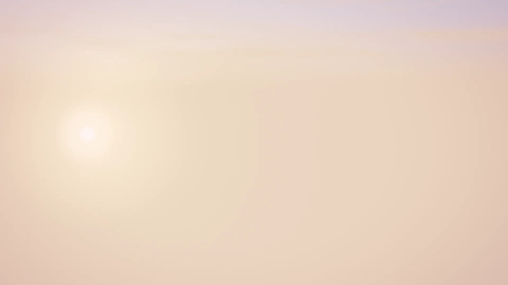
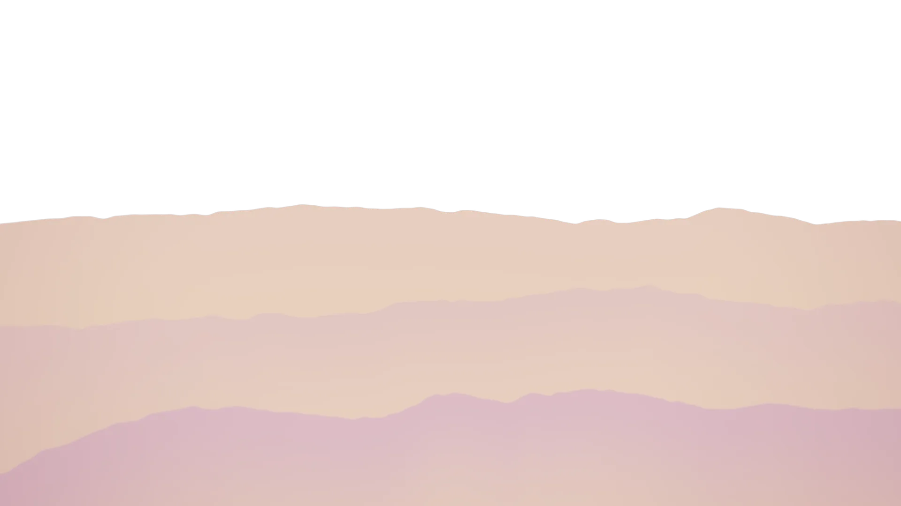
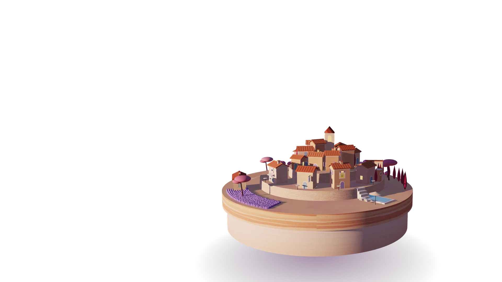
layers/layer-1-sky · layer-2-ridges · layer-3-diorama
Product visuals
Every product is a house in the village.
Each live or building product gets its own little building on a slice of the plinth, with the real logo on a sign: an enamel blade sign, a glazed tile over the door, a tile on the gate pillar, a plaque over an awning. Same world, different hour.


Identity
An arch, a sill, a sun coming up.
The mark is a round-arched window with the sun rising on its sill: the view from the village, and the first light on a working day. The wordmark is outlined Nunito at weight 820.

identity/mark.svgidentity/wordmark.svgidentity/wordmark-on-dark.svg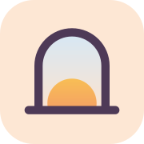
identity/favicon.svg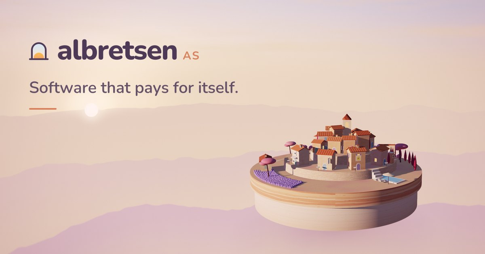
identity/og-image.jpgPalette
Sunrise: peach, gold, pale blue.
Warm paper and peach carry the page; ink is a deep mauve, never black. Rose and cypress come from the infrared grade and stay inside imagery.
Typography
Nunito, one variable family.
A rounded sans with soft terminals: sunny without being childish when set heavy and tight for display, and light for big figures. Self-hosted variable woff2 (39 KB roman, 42 KB italic), weights 200 to 1000.
pays for itself.
Motion study · motion.css + motion.js
Slow, warm, never in a hurry.
2 · Sun Drag
Drag the sun. One custom property, --t, re-mixes the sky in OKLCH and picks a baked frame below.
3 · Shutter Open
Images arrive behind pale-blue louvered shutters that swing open as they enter.
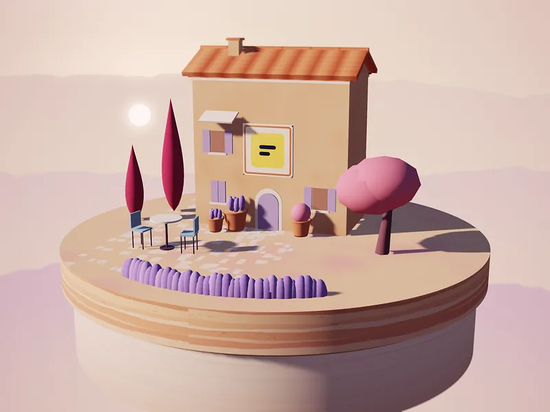
4 · Warm Up
Headlines warm from weight 300 to 820, letter by letter, like stone in morning sun.
Quiet software that pays for itself.
1 · Haze Drift · + Turntable
See the layered block above. The live diorama also idles on its turntable at 0.035 rad/s (one turn every three minutes) and stops for reduced motion.
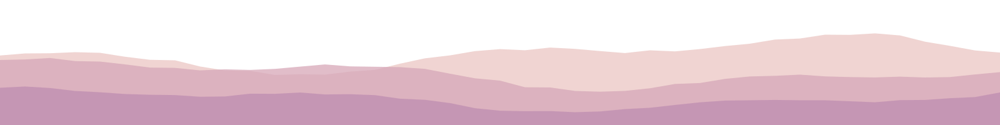
Extras
Texture and small things.
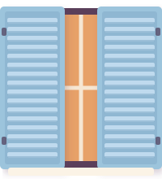
extras/shutters.svg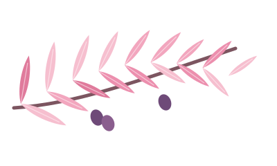
extras/olive-sprig.svg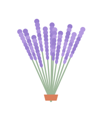
extras/lavender-bundle.svg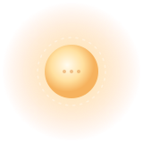
extras/sun-handle.svg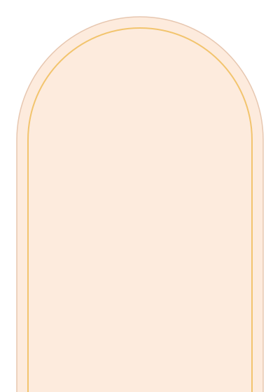
extras/arch-*.svgextras/roof-tile-edge.svgextras/paper-grain.webp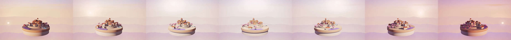
img/sun-sequence-strip